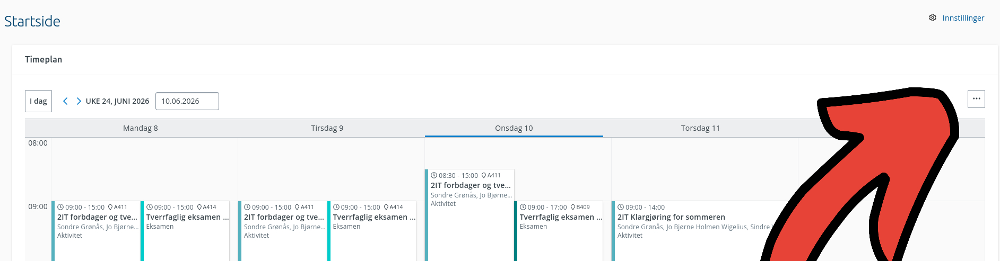
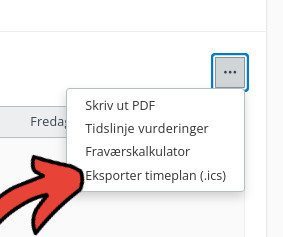

3. Kalendereksport
Kalendereksport lar deg laste ned timeplanen din fra VIS InSchool som en kalenderfil.
Filen kan importeres i kalenderapper som Google Calendar, Apple Calendar og Outlook.
Dette kan du gjøre
- Få timeplanen inn i kalenderappen din.
- Se skoletimer sammen med andre avtaler.
- Slippe å legge inn alle timene manuelt.
Slik bruker du den
Gå til startsiden eller timeplanen i VIS InSchool.
Klikk på menyknappen med tre prikker oppe til høyre i timeplanen:

Velg Eksporter timeplan (.ics) i menyen:

Nettleseren laster ned en fil som heter timetable.ics. Filen havner vanligvis
i Nedlastinger-mappen, men plasseringen kan avhenge av nettleserinnstillingene
dine.
Importer filen i kalenderappen du bruker:
| Kalenderapp | Hvordan importere .ics |
|---|---|
| Google Calendar | På desktop: gå til Settings → Import & export → Import, velg .ics-filen fra PC-en, velg kalender, og trykk Import. |
| Apple Calendar / iCloud Calendar | På Mac: åpne Calendar-appen, bruk File → Import, eller dra .ics-filen inn i Calendar. Velg kalenderen hendelsene skal legges i. |
| Microsoft Outlook for Windows | Gå til File → Open & Export → Import/Export, velg Import an iCalendar (.ics) or vCalendar file (.vcs), velg filen, og åpne/importer. |
| Outlook.com / Outlook on the web | Bruk Add calendar / Legg til kalender og importer fra .ics-fil. |
Eksempel på bruk
Hvis du vil se skoletimene sammen med fritidsaktiviteter og avtaler, kan du
eksportere timeplanen fra VIS og importere timetable.ics i kalenderappen din.
Da vises skoletimene som vanlige kalenderhendelser.
Hva er en .ics-fil?
En .ics-fil er en kalenderfil. Den inneholder tidspunkt, datoer og tekst for kalenderhendelser.
Det betyr at kalenderapper kan lese filen og legge skoletimene inn i kalenderen din.
Hvis det ikke fungerer
Sjekk at userscriptet er aktivert, at du er logget inn i VIS InSchool, og at
nettleseren ikke blokkerer nedlastingen. Hvis kalenderappen ikke importerer
filen, prøv å laste ned filen på nytt og kontroller at kalenderappen støtter
import av .ics-filer.
Se også hjelp og feilsøking.
Begrensninger
- Eksporten lager en fil på eksporttidspunktet.
- Den synkroniserer ikke automatisk senere endringer i timeplanen.
- Importopplevelsen varierer mellom kalenderapper.
- Modulen bruker data fra VIS InSchool og kan slutte å fungere hvis VIS endrer systemet sitt.